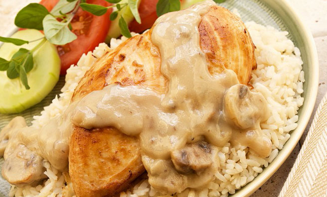

Bumbu Dasar Bali
Bumbu Dasar Bali ini adalah bumbu halus ala Cooking with Sheila yang banyak saya gunakan dalam memasak beraneka masakan Bali seperti ikan bakar atau seafood lainnya seperti udang dan cumi. Saya menggunakan bumbu yang sama untuk sate lilit ikan, ayam, sapi atau babi dan bahkan menu sayuran. Beberapa hari ke depan saya akan menggunakan bumbu ini dan menghidangkan beberapa masakan Bali. Yuk nantikan menu saya berikutnya yaa 🙂

Bahan:
450 gram (25 buah) cabai merah besar
50 gram (10 siung) bawang putih
225 gram (50 butir) bawang merah
175 gram (kurleb 3-4 buah) kunyit
100 gram (kurleb 3 buah) jahe
120 gram kemiri
200 gram (2 buah) tomat merah
2 sdm biji ketumbar, sangrai
2 sdm terasi bakar
6 mata asam
3 batang serai, memarkan
3 lembar daun salam
2 sdm gula pasir
1/2 sdm Garam
10 sdm minyak goreng
Cara Membuat:
– Haluskan semua bahan kecuali asam, serai, salam dan gula.
– Panaskan minyak dalam wajan dan tumis bumbu halus bersama asam, serai dan salam.
– Bumbuhi dengan gula dan garam. Rasakan bila kurang asin atau manis bisa ditambah.
– Masak dengan api kecil selama kurleb 30 menit hingga matang.
– Dinginkan dan simpan dalam lemari es.
(Untuk kurleb 1,2 kg bumbu)